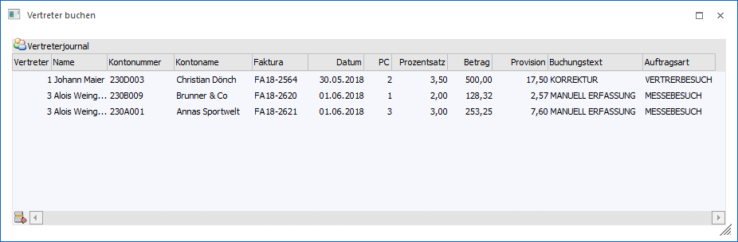
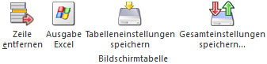

Generell werden die Vertreter automatisch bei dem Druck der Fakturen abgerechnet, d.h. die Daten für die Provisionierung gebildet. Hierbei wird der Vertreter der Belegzeile (die Vorbelegung stammt aus dem Personenkontenstamm, Register "FAKT") mit dem dortigen Provisionscode (die Vorbelegung stamm aus dem Artikelstamm, Register "Preise", Unterregister "Preise") zur Berechnung herangezogen. Manuelle Ergänzungen bzw. Korrekturen können hierbei jederzeit über…
1 WinLine FAKT
1 Erfassen
1 Vertreter buchen
… durchgeführt werden.

In der Tabelle "Vertreterjournal" stehen folgende Spalten zur Verfügung:
Ø Vertreter
An dieser Stelle wird die Nummer des Vertreters hinterlegt.
Ø Name
Nach Auswahl des Vertreters wird hier der entsprechende Name anzeigt.
Ø Kontonummer
In diese Spalte kann optional die Nummer eines bestehenden Personenkontos bzw. Interessenten hinterlegt werden.
Ø Kontoname
Nach Auswahl der Kontonummer wird hier der entsprechende Name anzeigt.
Ø Faktura
In diese Spalte kann optional die Nummer der Faktura hinterlegt werden.
Ø Datum
An dieser Stelle kann das Datum der Faktura bzw. das Datum der Korrektur / Ergänzung hinterlegt werden.
Ø Provisionscode
In dieser Spalte wird der Provisionscode (PC) für die Berechnung der Provision eingetragen.
Ø Prozentsatz
Hier wird der Prozentsatz für die Provisionsberechnung angezeigt. Dieser ergibt sich automatisch aus dem zuvor zu erfassenden Provisionscode.
Ø Betrag
In dieser Spalte wird die Berechnungsbasis (netto) für die Provision hinterlegt (z.B. der Fakturen-Nettobetrag). Aufgrund des eingegebenen Provisionscodes wird dann die Provision errechnet, welche in der weiteren Folge dann auch gebucht wird.
Ø Provision
Hier wird die der errechneten Provision angezeigt.
Ø Buchungstext
In dieser Spalte kann ein 20-stelliger Text zur Buchung erfasst werden.
Ø Auftragsarten
Hier kann eine Auftragsart zur Buchung erfasst werden. Die Anlage der Auftragsarten erfolgt dabei im Programm "Vertreter-Init" (WinLine START - Abschluss).
Tabellenbuttons

Ø Zeilen entfernen
Durch Anklicken des Buttons "Zeilen entfernen" wird die markierte Buchungszeile gelöscht.
Ø Ausgabe Excel
Durch Anwahl des Buttons "Ausgabe Excel" wird der Inhalt der Tabelle nach Microsoft Excel übergeben.
Ø Tabelleneinstellungen speichern
Die Spalten einer Tabelle können grundsätzlich an beliebige Positionen verschoben, bzw. in der Breite entsprechend angepasst werden. Durch Anwahl des Buttons "Tabelleneinstellungen speichern" werden die Einstellungen benutzerspezifisch gespeichert und bei dem nächsten Aufruf des Programmpunktes wieder vorgeschlagen.
Ø Gesamteinstellungen speichern…
Im Gegensatz zu "Tabelleneinstellungen speichern" können mit "Gesamteinstellungen speichern" mehrere Tabellenaufbauten gespeichert und nach Wunsch geladen werden. Zusätzlich werden Sonderfunktionen der Tabelle (z.B. "Spalte gruppieren") ebenfalls bei der Speicherung bedacht.
Buttons
Ø Ok (nicht in Register "Optionen")
Durch Anwahl des Buttons "Ok" bzw. der Taste F5 werden die Buchungen durchgeführt / gespeichert und die Tabelle geleert.
Achtung
Es werden hierbei nur Zeilen für eine Vertreter-Provisionsübernahme gebildet. Dieses müssen anschließend mit Hilfe des Programms "Provisionsübernahme" (WinLine FAKT - Auswertungen - Vertreterauswertungen - Provisionsübernahme) übernommen werden. Erst nach der Übernahme dieser Vertreterjournalzeilen in die Vertreterdaten können die Auszahlungen bzw. die KF-Buchungen für jene Zeilen erstellt werden.
Ø Ende
Durch Drücken des Buttons "Ende" bzw. der Taste ESC wird das Fenster geschlossen und alle nicht gespeicherten Buchungen verworfen.